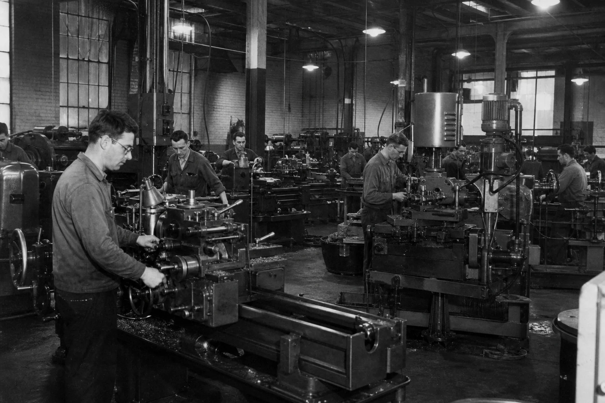
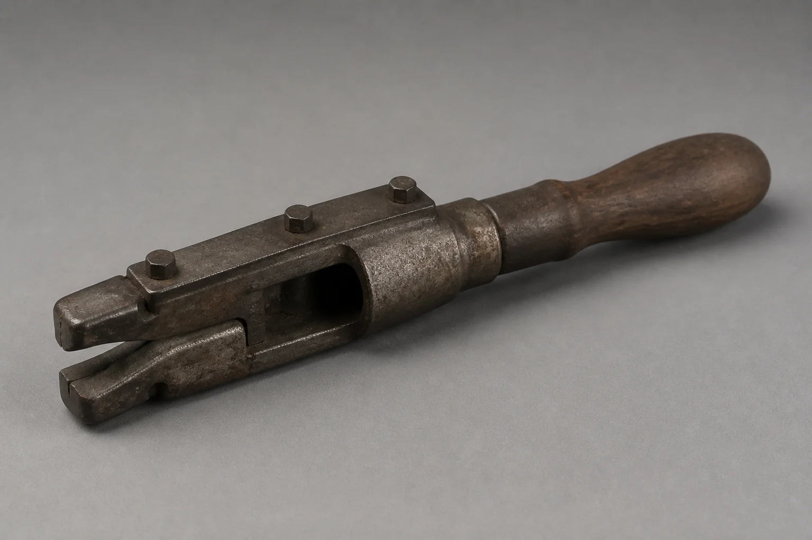

18,420
Photographs
Records
Industry remembered through the people who built it.
18,420
Records
7,860
Records
614
Records
1,205
Records

Placeholder
Object title, maker, date, medium, and collection number have not been supplied.

Specimen field · details not specifiedResearch and access
Photographs, documents, oral histories, and physical objects are held for research. Hours, appointment rules, and reproduction policy have not been supplied here; write to request access.
The archive’s work is to keep the record usable: 18,420 photographs, 7,860 documents, 614 oral histories, 1,205 objects.
Preservation
Industry remembered through the people who built it.
The Great Lakes Industrial Archive preserves documents, photographs, oral histories, and physical artifacts related to Great Lakes manufacturing history. Established in 1987, it treats those records as evidence of labour, not as decoration for industry.
Preservation here means keeping names, places of work, and the material record available to the public that still lives among the lakes.
Visit / Contact
A street address and public hours have not been supplied. Inquiries may be directed through the contact request.